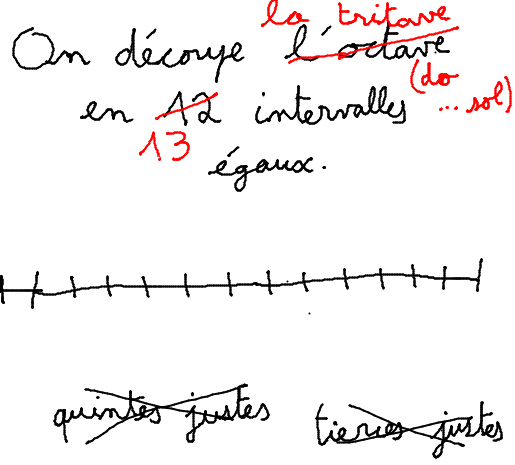
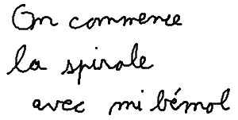
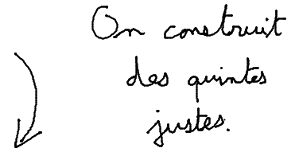
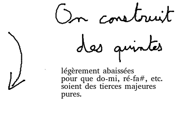
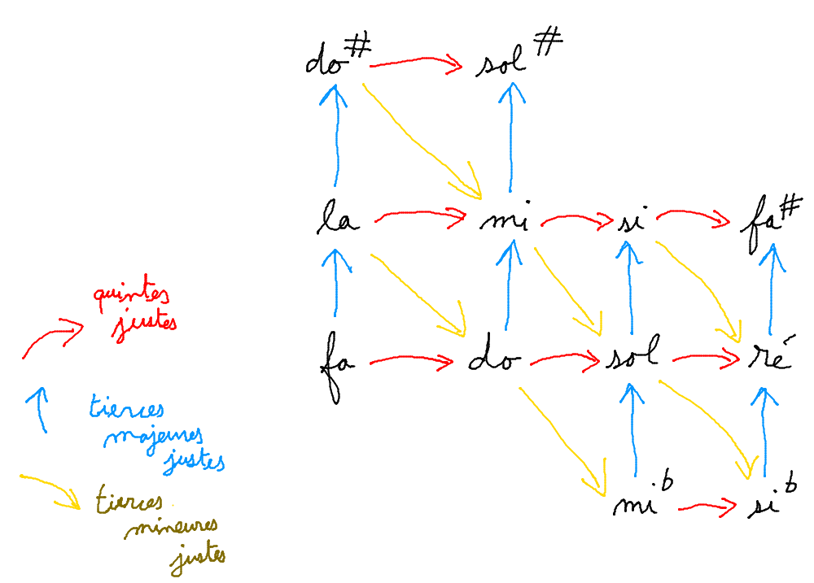
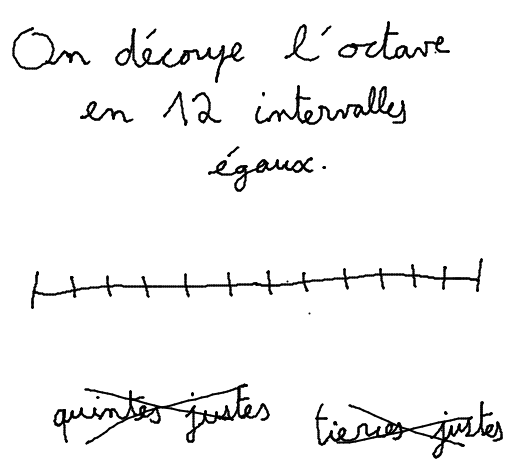

The crazy piano
Scale |
Fun |
Timbre |
Warning: MIDI input only works under Chrome. Please plug your MIDI keyboard and restart Chrome.

|


|
|
|

|
|



This website enables to listen to different musical scales/tuning/temperaments. It also enables to have some fun with some effects.
To play sounds, 1) click on the keyboard 2) or press a key on your computer keyboard (letters are indicated on the musical keyboard on the screen) 3) or plug your MIDI instrument (only under Google Chrome, please plug first and then reload Chrome).
For more information, or if you want to leave a comment, do not hesitate to contact the author at francois.schwarzentruber[@]ens-rennes.fr.
François Schwarzentruber